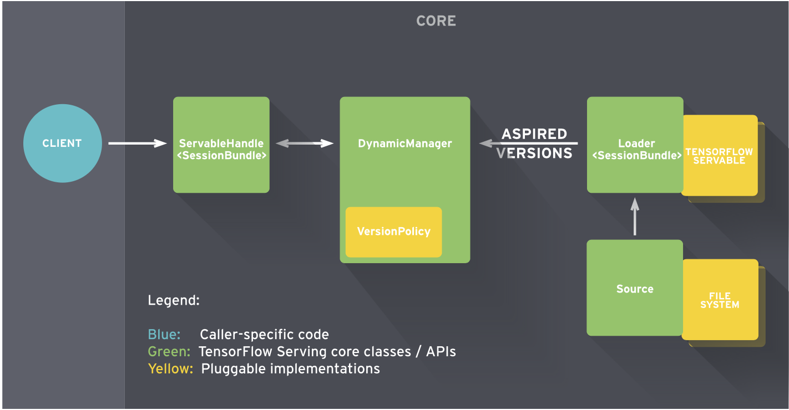
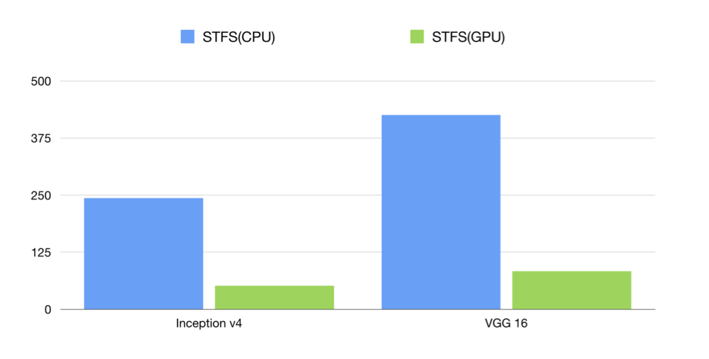
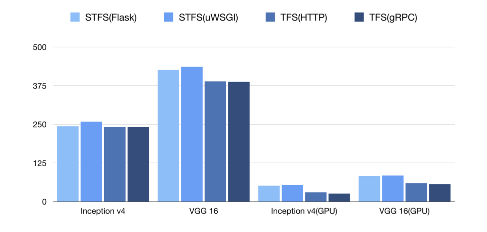
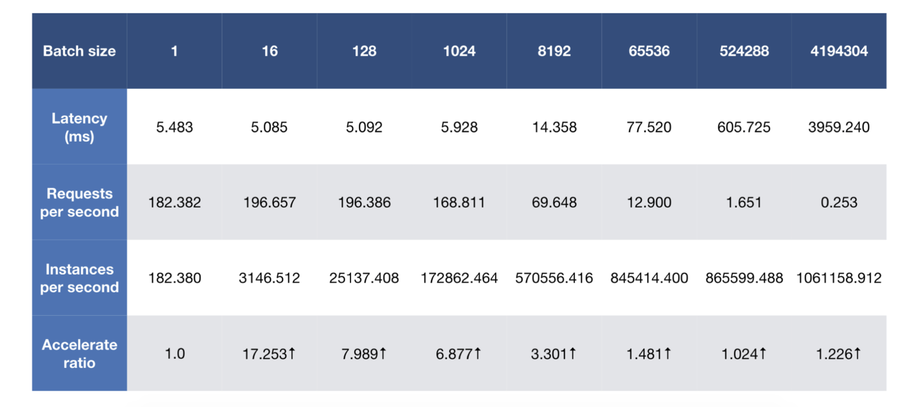

TensorFlow SavedModel
- SaveModel与语言无关
- Tensorflow Serving server部署模型必须选择SavedModel格式。
一个比较完整的SavedModel模型包含以下内容：
1 | assets/ |
saved_model.pb是MetaGraphDef，它包含图形结构。variables文件夹保存训练所习得的权重。assets文件夹可以添加可能需要的外部文件，assets.extra是一个库可以添加其特定assets的地方。
MetaGraph是一个数据流图，加上其相关的变量、assets和签名。MetaGraphDef是MetaGraph的Protocol Buffer表示。
保存
1 | tf.saved_model.simple_save(sess, |
加载
1 | with tf.Session(graph=tf.Graph()) as sess: |
Tensorflow Serving
Key Concepts:
- Servables: the underlying objects that clients use to perform computation.
Typical servables include:- TensorFlow SavedModelBundle(tensorflow::Session)
- lookup table for embedding/vocabulary lookups.
- Loaders: manage a servable’s life cycle.
- Sources: plugin modules that originate servables.
- Managers: Sounds like they basically just work with the 3 previous things. They load, serve, and unload servables.
- Core: All of the above wrapped into a single object.

Servables
Servables 是 TensorFlow Serving 中最核心的抽象，是客户端用于执行计算 (例如：查找或推断) 的底层对象。
Servables Streams
一个 Servables Stream 是多个版本的 Servable 的序列，其按照版本号的递增排序。
Loaders
Loaders 管理一个 Servable 的生命周期。Loader API 提供了一个独立于特定机器学习算法，数据和用户产品用例的通用基础平台。具体说，Loaders 将一个 Servable 的加载和卸载的 API 进行了标准化。
Sources
Sources 是用于查找和提供 Servables 的插件模块，每个 Source 提供零个或多个 Servable Streams。对于每个 Servable Stream，一个 Source 为一个 Loader 实例对不同版本的载入提供支持。(一个 Source 通常是由零个或多个 SourceAdapters 链接在一起，其中最后一项将触发 Loaders。)
Managers
Managers 维护 Servables 的整个生命周期，包括：
- 加载 Servables
- 为 Servables 提供服务
- 卸载 Servables
Core
TensorFlow Serving Core 通过 TensorFlow Serving APIs 管理 Servales 的如下方面：
- 生命周期 (lifecycle)
- 度量信息 (metrics)
启动过程主要是创建ServerCore对象, 并启动grpc server和http server.
ServerCore对象可以认为是系统中枢, 模型的维护, 服务请求的处理都是由他完成. ServerCore通过BasicManager管理所有的model(多版本号), 并查处模型已经提供预测、分类、回归请求.
ServerCore启动的时候创建AspiredVersionManager, AspiredVersionManager会启动定时任务(线程), 用于处理AspiredVersionRequest消息, 其实就是模型的加载、卸载.
启动的时候ServerCore还会根据模型配置创建文件系统扫描任务, 定时扫描模型文件目录并进行相应的处理
http rest服务启动后, 会监听http post请求, 通过serverCore查找对应的模型版本, 获取对应的已加载的模型, 进行运算并返回结果. gRPC服务与 http rest服务类似.
example
例如：一个 Source 请求一个包含最近更新的权重的 TensorFlow 计算图，其权重信息存储在硬盘的一个文件中。
- Source 检测到一个新版本的模型权重，其会创建一个包含指向磁盘中模型数据指针的 Loader。
- Source 通知 Dynamic Manager 此时的 Aspired Version。
- Dynamic Manager 应用 Version Policy 并决定载入新版本。
- Dynamic Manager 通知 Loader 目前有充足的内存，Loader 利用新的权重实例化 Tensorflow 计算图。
- 一个客户端请求最新版本的模型，Dynamic Manager 返回一个最新版本 Servable 的处理器。
Functions
- Support distributed TensorFlow models
- Support the general RESTful/HTTP APIs
- Support inference with accelerated GPU
If you want to use GPU, try with the docker image with GPU tag and put cuda files in /usr/cuda_files/.
1 | export CUDA_SO="-v /usr/cuda_files/:/usr/cuda_files/" |
You can set session config and gpu options in command-line parameter or the model config file.1
simple_tensorflow_serving --model_base_path="./models/tensorflow_template_application_model" --session_config='{"log_device_placement": true, "allow_soft_placement": ˓→true, "allow_growth": true, "per_process_gpu_memory_fraction": 0.5}'
1 | { |
Here is the benchmark of CPU and GPU inference and y-coordinate is the latency(the lower the better).

- Support curl and other command-line tools
- Support clients in any programming language
- Support code-gen client by models without coding
You can generate the test json data for the online models.
1
curl http://localhost:8500/v1/models/default/gen_json
Or generate clients in different languages(Bash, Python, Golang, JavaScript etc.) for your model without writing any code.
1
curl http://localhost:8500/v1/models/default/gen_client?language=python > client.py
Support inference with raw file for image models
1
curl -X POST -F 'image=@./images/mew.jpg' -F "model_version=1" 127.0.0.1:8500
Support statistical metrics for verbose requests
- Support serving multiple models/multiple version at the same time
1
2
3
4
5
6
7
8
9
10
11
12
13
14
15
16
17model_config_list:{
config:{
name:"model1",
base_path:"/models/multiModel/model1",
model_platform:"tensorflow"
},
config:{
name:"model2",
base_path:"/models/multiModel/model2",
model_platform:"tensorflow"
},
config:{
name:"model3",
base_path:"/models/multiModel/model3",
model_platform:"tensorflow"
}
}
1 | docker run -p 8501:8501 --mount type=bind,source=/home/jerry/tmp/multiModel/,target=/models/multiModel \ |
1 | import requests |
请求指定模型版本1
SERVER_URL = 'http://localhost:8501/v1/models/model1/versions/100001:predict'
- Support dynamic online and offline(hot plugin) for model versions
tfserving支持模型的Hot Plug，上述容器运行起来之后，如果在宿主机的 /home/jerry/tmp/multiModel/model1/ 文件夹下新增模型文件如100003/，tfserving会自动加载新模型；同样如果移除现有模型，tfserving也会自动卸载模型。
- Support loading new custom op for TensorFlow models
If your models rely on new TensorFlow custom op, you can run the server while loading the so files.1
simple_tensorflow_serving --model_base_path="./model/" --custom_op_paths="./foo_op/"
- Support secure authentication with configurable basic auth
For enterprises, we can enable basic auth for all the APIs and any anonymous request is denied.1
./server.py --model_base_path="./models/tensorflow_template_application_model/" -- enable_auth=True --auth_username="admin" --auth_password="admin"
If you are using the Web dashboard, just type your certification. If you are using clients, give the username and password within the request.1
curl -u admin:admin -H "Content-Type: application/json" -X POST -d '{"data": {"keys": ˓→[[11.0], [2.0]], "features": [[1, 1, 1, 1, 1, 1, 1, 1, 1], [1, 1, 1, 1, 1, 1, 1, 1, ˓→1]]}}' http://127.0.0.1:8500
- Support multiple models of TensorFlow/MXNet/PyTorch/Caffe2/CNTK/ONNX/H2o/Scikit-learn/XGBoost/PMML
1 | simple_tensorflow_serving --model_base_path="./models/tensorflow_template_application_ model" --model_platform="tensorflow" |
1 | simple_tensorflow_serving --model_base_path="./models/mxnet_mlp/mx_mlp" --model_ platform="mxnet" |
- Extra support for image models
- uploading the image files in web browser
1 | simple_tensorflow_serving --model_base_path="./deep_image_model" |
- using form-data
accept the base64 strings as input, then decode and resize the tensor for the required model input.
1 | import requests |
To conclude, its seems that the serialization of Tensorflow Protobuff is less “consistent”, time wise, then the one to plain JSON, though it is more efficient size wise. I would test these on more complex objects, but for now, it seems that if you have simple big inputs then gRPC would be much faster. Having more complex objects as inputs (such as arrays and matrix), up until a certain size, REST with JSON should be faster (as we have seen in the MNIST example tested locally). However, the requests themselves (and probably their processing on the server side) are much faster using gRPC, so bandwidth should be put into the equation as the inputs size grows.
APIs
gRPC
- gRPC使用ProtoBuf来定义服务，ProtoBuf是由Google开发的一种数据序列化协议，性能出众，得到了广泛的应用;
- 支持多种语言;
- 基于HTTP/2标准设计。
RESTful API
TensorFlow ModelServr 除了提供 gRPC APIs 以外，还支持 RESTful APIs 用于 TensorFlow 的分类，回归和预测模型1
2
3
4POST http://host:port/<URI>:<VERB>
URI: /v1/models/${MODEL_NAME}[/versions/${MODEL_VERSION}]
VERB: classify|regress|predict
example1
2http://host:port/v1/models/iris:classify
http://host:port/v1/models/mnist/versions/314:predict
classify 和 regress APIs 的请求内容必须为如下格式的 JSON 对象
1 | { |
Response format1
2
3
4
5
6
7
8
9
10{
"result": [
// List of class label/score pairs for first Example (in request)
[ [<label1>, <score1>], [<label2>, <score2>], ... ],
// List of class label/score pairs for next Example (in request)
[ [<label1>, <score1>], [<label2>, <score2>], ... ],
...
]
}
Encoding binary values
JSON 使用 UTF-8 格式编码。如果输入特征或张量的值为二进制 (例如：图像)，则你需要将数据利用 Base64 进行编码，并将其以 b64 为键封装在 JSON 对象中：
1 | { "b64": <base64 encoded string> } |
1 | { |
一个包含图片 image (二进制数据) 和标题 caption 特征的分类请求示例如下：1
2
3
4
5
6
7
8
9
10
11
12
13{
"signature_name": "classify_objects",
"examples": [
{
"image": { "b64": "aW1hZ2UgYnl0ZXM=" },
"caption": "seaside"
},
{
"image": { "b64": "YXdlc29tZSBpbWFnZSBieXRlcw==" },
"caption": "mountains"
}
]
}
TensorFlow Serving Benchmark
MNIST (235MB image)
Running a simple benchmark on my machine (Macbook pro) with 1000 sync requests and a batch size of 100 images in each request had some surprising results. The inference rate was in favor of the REST API, tough, as expected, the payload of requests was twice the size when using REST. I run this test several times and got the same results.
REST
Inference rate: 1,729 img/sec
Network: 620 MBgRPC
Inference rate: 1,239 img/sec
Network: 320 MB
Removing the serializations part from the gRPC, and sending the same prepared request over and over again indeed had increased the inference rate dramatically to 25,961 img/sec when using gRPC. Doing the same, and sending the same already serialized REST request (JSON) have increased the inference rate as well, but not as much, to 7,680 img/sec. Giving the advantage to using gRPC by a factor of ~3.5. This suggests that a lot of the overhead is in the transformation of the Numpy array into a tensor Protobuff or JSON. This actually made sense when working locally as the network bandwidth is less of an issue.
REST (serialized once)
Inference rate: 7,680 img/sec
Network: 620 MBgRPC (serialized once)
Inference rate: 25,961 img/sec
Network: 320 MB
checking only the preparation of the requests (both gRPC and REST) have shown that when using Numpy arrays as input gRPC is little slower then REST. Using a raw PNG image (basically a string) as input, REST seems to be much slower (X6) then gRPC
REST (preperation only)
Image: 2,148 img/sec
Numpy array: 1,090 img/secgRPC (preperation only)
Image: 14,490 img/sec
Numpy array: 1,249 img/sec
1 | import pickle |
TFS(Simple TensorFlow Serving) and TFS(TensorFlow Serving) have similar performances for different models. Vertical coordinate is inference latency(microsecond) and the less is better.

For simplest model, each request only costs ~1.9 microseconds and one instance of Simple TensorFlow Serving can achieve 5000+ QPS. With larger batch size, it can inference more than 1M instances per second.
